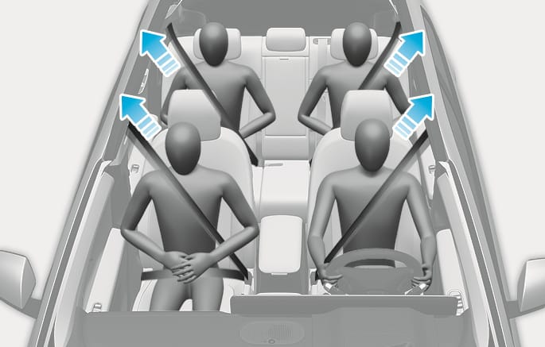

안전벨트 기능 알아두기
모든 좌석에는 ELR(Emergency Locking Retractor) 방식의 3점식 안전벨트가 장착되어 있습니다.
-
ELR 안전벨트는 정상 주행 중에는 다소간의 움직임을 허용하지만, 급정차, 급회전, 충돌 등 차량의 거동에 갑작스런 변화가 발생하는 경우 관성 잠금 장치를 작동해 안전벨트를 고정합니다.
ALR(Automatic Locking Retractor)은 어린이 보조좌석을 장착할 때 안전벨트가 느슨해지는 것을 방지해 안전성을 높이는 작동 방식입니다.
-
필요 시 뒷좌석 안전벨트를 끝까지 뽑은 후 ALR 안전벨트로 변경해 사용할 수 있습니다.
-
자세한 설명은 '어린이 보조좌석 사용하기'를 참고하십시오.
차량 전방으로부터 강한 충격이 감지되면 안전벨트를 순간적으로 잡아당겨 탑승자의 몸을 좌석에 밀착시키는 기능입니다.
-
프리텐셔너가 정상적으로 작동하기 위해서는 탑승자가 안전벨트를 올바르게 착용하고 바른 자세를 유지해야 합니다.
-
프리텐셔너는 한 번만 작동하도록 설계되어 있습니다. 작동한 프리텐셔너는 반드시 교체하십시오.

2C_RetractPretensioner
리트랙터 프리텐셔너
리트랙터 프리텐셔너는 정면충돌 시 안전벨트 어깨띠를 순간적으로 잡아당겨 탑승자의 상체를 견고하게 고정하므로, 안전벨트와 에어백의 보호 효과를 높입니다.
-
에어백 작동 시 리트랙터 프리텐셔너가 함께 작동하며, 안전벨트 착용 중 작동 조건이 충족되면 에어백 작동 여부와 무관하게 단독으로 작동할 수도 있습니다.
-
리트랙터 프리텐셔너는 뒷좌석 중앙 안전벨트를 제외한 모든 안전벨트에 적용되며, 작동 조건이 충족되면 탑승자가 없는 경우에도 작동할 수 있습니다.
로드 리미터 (Load Limiter)
차량이 충돌할 때 안전벨트로 인해 가슴에 과도한 하중이 걸리면, 프리텐셔너(리트랙터 프리텐셔너)에 내장된 로드 리미터가 가슴의 압박을 줄여줍니다.
-
프리텐셔너가 작동하면 큰 소음과 함께 연기 같은 미세 가루가 발생할 수 있습니다. 이 가루는 무독성 가스 입자이지만 호흡기나 피부를 자극할 수 있으므로, 가루를 들이마시지 말고 손과 얼굴을 깨끗이 씻으십시오.
-
프리텐셔너 작동 시 높은 열이 발생하므로 부품을 만지는 경우 화상을 입을 수 있습니다. 작동 후 몇 분 동안은 프리텐셔너 부품을 만지지 마십시오.
-
프리텐셔너 내부에는 폭발성 화학 물질이 들어 있으므로, 프리텐셔너에 충격을 가하지 않도록 주의하십시오.
-
프리텐셔너를 임의로 점검, 수리 또는 교체하지 마십시오. 필요한 경우 당사 직영 하이테크센터나 블루핸즈에서 프리텐셔너를 점검하십시오.
-
차량 전면부를 수리하기 위해 판금이나 도장이 필요한 경우, 또는 오디오 부품을 장착하려는 경우, 당사 직영 하이테크센터나 블루핸즈에 상담을 요청하십시오.
-
안전벨트 프리텐셔너가 정상적으로 작동하지 않으면, 에어백(
= ) 경고등이 켜집니다.
-
-
다음과 같은 경우 당사 직영 하이테크센터나 블루핸즈에서 차량을 점검하십시오.
-
시동을 걸때('ON') 에어백 경고등이 켜지지 않는 경우
-
차량 시동('ON') 후 3-6초가 경과한 뒤에도 에어백 경고등이 켜져 있거나 깜빡이는 경우
-
주행 중 에어백 경고등이 켜지는 경우
-